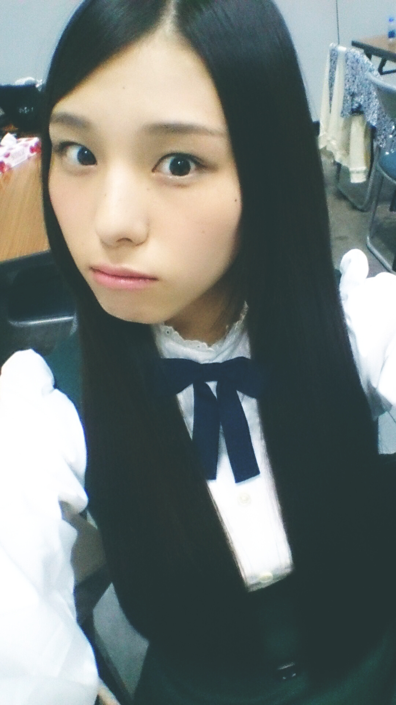
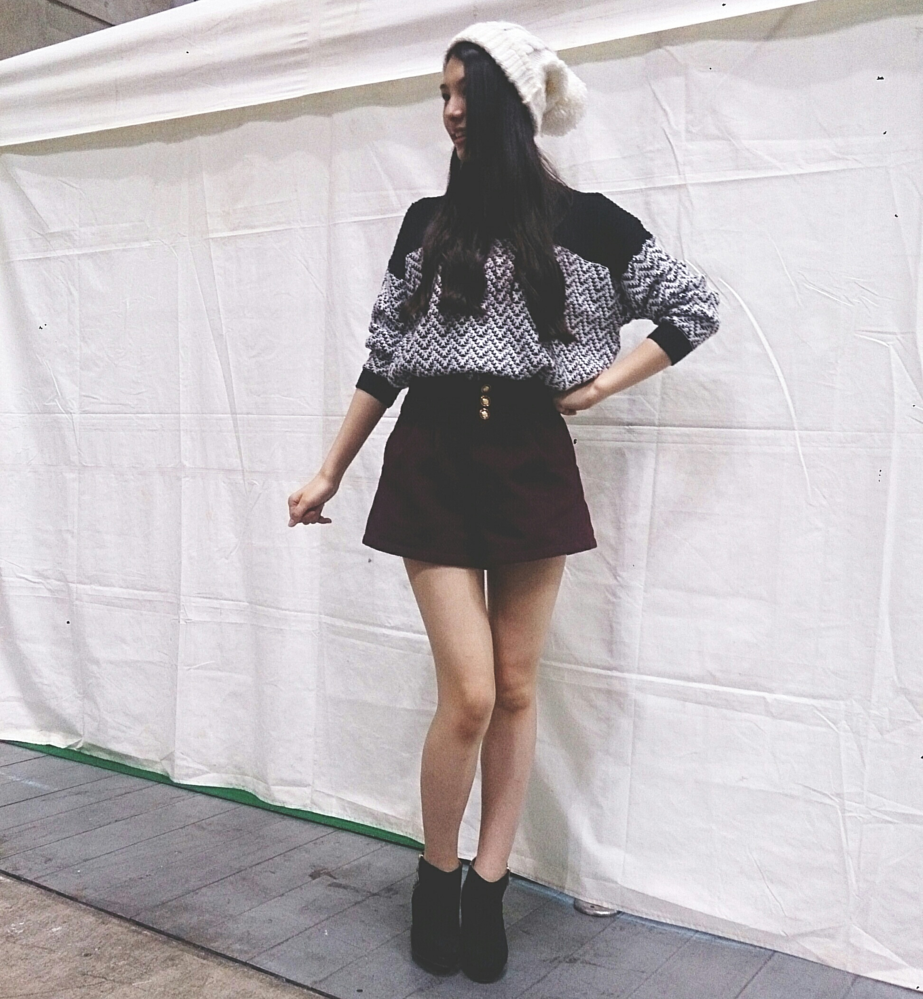
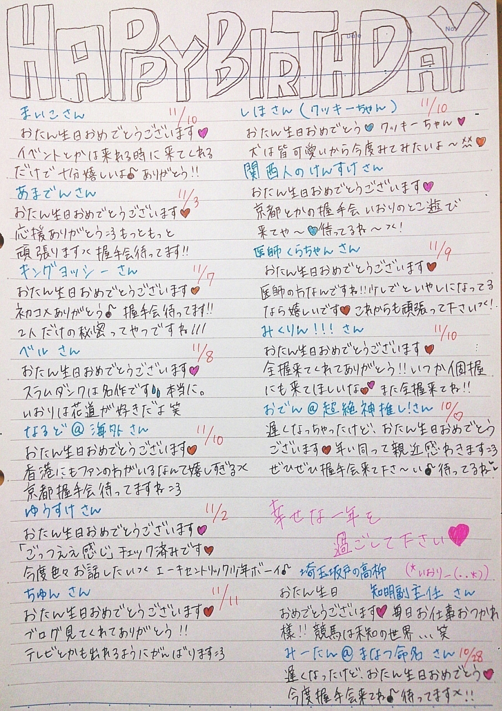
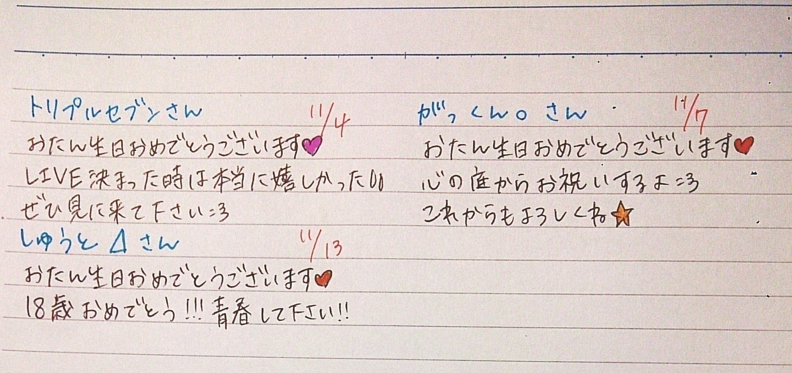
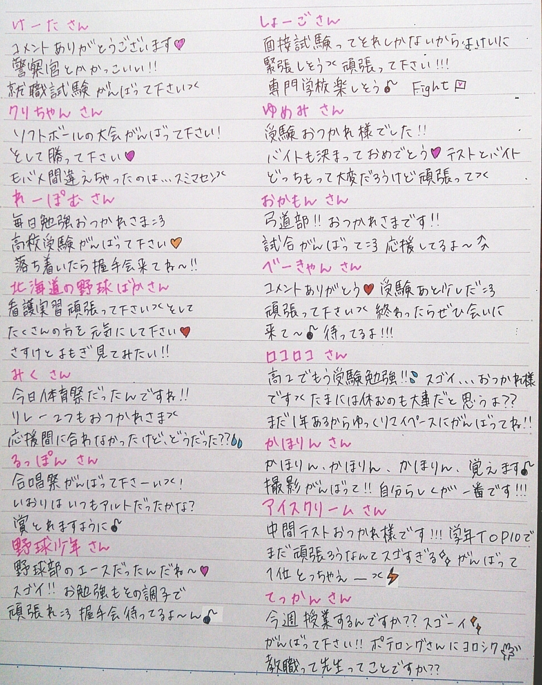
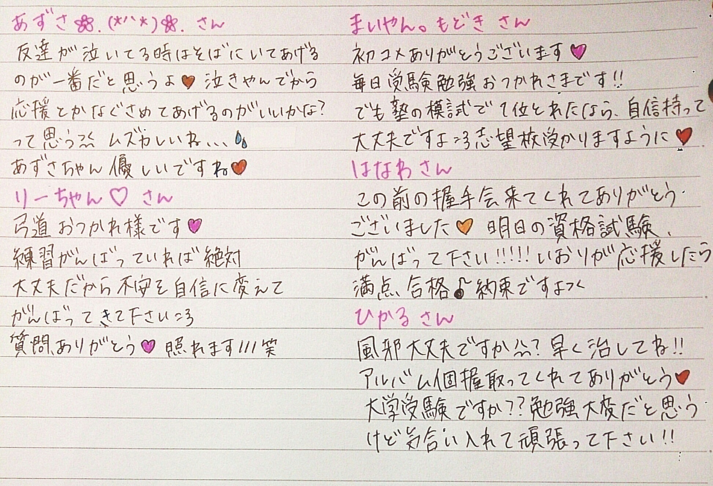

| 2014/11 08 Sat | (*いおり_(．．*)vol.12) |
みなさんこんばんはー！
高校2年生16歳
さがらいおりです！

先週の握手会
来てくれた方ありがとうございました！
朝から楽しかったです♪♪
1部はストレートで、
2部
ニット帽、巻きおろし
3部
だてメガネ、低めのツイン
私服は3部ともこれ！

上下どっちも
VENCE EXCHANGEってとこの！
読み方は分からない！
次は多分着替えるよ：）
初めての 3 部制
たくさんの方が来てくれて
嬉しかったです(´,,•ω•,,)♡
まだまだ頑張ろーって思いました、！
全握にもたくさんの方が来てくれて
嬉しかったです♪♪
ありがとうございました *˙︶˙*)ﾉ"
~いおり庵~
 読んでる漫画のキャラクターで誰が好き？
読んでる漫画のキャラクターで誰が好き？
ONE PIECE
ペローナ ハンコック
トラファルガー・ロー
スラムダンク
花道
三井
黒子のバスケ
黒子
赤司
BLEACHは覚えてない(>_<)！
洋楽で好きなアーティストは？
よく聴く順で並べると(敬称略)
Avril Lavigne
Taylor Swift
One Direction
Owl city
Katy Perry
Rihanna
Kesha
Lady GaGa
BACKSTREET BOYS
Kelly Clarkson
Cher Lloyd
Carly Rae Jepsen
Gwen Stefani
Demi Lovato
Good Charlotte
Lilly Allen
LINKIN PARK
Orianthi
Rita Ora
AQUA
下に行くにつれて詳しくありません。
え！これ聴くの！？
って人の歌は親の影響だと思ってください：）
お誕生日の方に
メッセージ書きました(´,,•ω•,,)♡


次のブログ更新に近い方は次書きます♪
応援メッセージも書きました↓


あ、そーなんです。
来週の(11/10)月曜日発売の
週刊プレイボーイさんに
わたくし相楽伊織が載っておるんです(ºωº)
少しでも気になる方は
是非買ってみて頂きたく思います。
「こじ坂46のMV撮影密着レポート」
の記事も載ってるそうです♪
増刊号の方です！
ちなみに、こじ坂46のMVショートver.が
公開されたので、時間あるときに見てみてね♪♪
あ！あと、
この前こったんこと佐々木琴子と
UTB+さんにも
グラビアを撮っていただきました *˙︶˙*)ﾉ"
ありがたいです。本当に。
ありがとうございました！
撮影の前日に 2 人で
川越に行ってきたんです♡
とーっても楽しかったよ♡
ね？こったん♡
ハート多くね？
って言われてもめげません！！！
あ！あとあと、
この前久しぶりにお笑いライブ
行ってきましたー♡♡
LLRさんの！！
出てたのはLLRさんだけじゃないけど！
すんごく楽しかった♪♪
また行きたいっっ！！！！！
あ、あとあとあと、
いおりは755やりませぬ。
ごめんなさいm(_ _)m
i o r i .

コメント(669)
2014/11/08 23:54